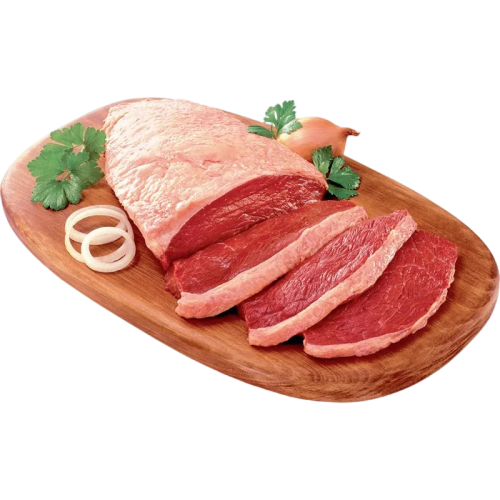

Casa de Carnes Nelore
Inicio
Produtos
Informações
Inicio
Produtos
Informações
há 24 anos, trazendo mais sabor para a mesa do belojardinense.
(81) 98791-0546

Produtos
Nossa Seleção de cortes
Alcatra
carne amplamente utilizada em cozidos, churrascos e assados.
R$36,00
Carne de Sol
carne amplamente utilizada em cozidos, churrascos e assados.
R$38,00
Picanha
Carne conhecida por ser usada tipicamente em Churrascos.
R$44,00
Coxão Mole
carne amplamente utilizada em cozidos, churrascos e assados.
R$35,00
Patinho
carne amplamente utilizada em cozidos, churrascos e assados.
R$35,00
Chã De Fora
carne amplamente utilizada em cozidos, churrascos e assados.
R$32,00
File Mignon
carne amplamente utilizada em cozidos, churrascos e assados.
R$45,00
Maminha
carne amplamente utilizada em cozidos, churrascos e assados.
R$40,00
Contra File
carne amplamente utilizada em cozidos, churrascos e assados.
R$40,00
Fraldinha
carne amplamente utilizada em cozidos, churrascos e assados.
R$29,50
Bisteca
carne amplamente utilizada em cozidos, churrascos e assados.
R$29,50
Ancho
carne amplamente utilizada em cozidos, churrascos e assados.
R$35,00
Costela
carne amplamente utilizada em cozidos, churrascos e assados.
R$24,00
Lombo das agulhas
carne amplamente utilizada em cozidos, churrascos e assados.
R$24,00
Charque do Cupim
carne amplamente utilizada em cozidos, churrascos e assados.
R$40,00
Picadinho
carne amplamente utilizada em cozidos, churrascos e assados.
R$20,00
Figado
carne amplamente utilizada em cozidos, churrascos e assados.
R$20,00
Porco
carne amplamente utilizada em cozidos, churrascos e assados.
R$18,00
Bode
carne amplamente utilizada em cozidos, churrascos e assados.
R$30,00
Bacon
carne amplamente utilizada em cozidos, churrascos e assados.
R$33,60
Cupim
carne amplamente utilizada em cozidos, churrascos e assados.
R$32,00
Local
R. Sebastião Cabral, 3 - Centro-Ponte Nova, Belo Jardim - PE, 55150-090.
Local
R. Sebastião Cabral, 3 - Centro-Ponte Nova, Belo Jardim - PE, 55150-090.